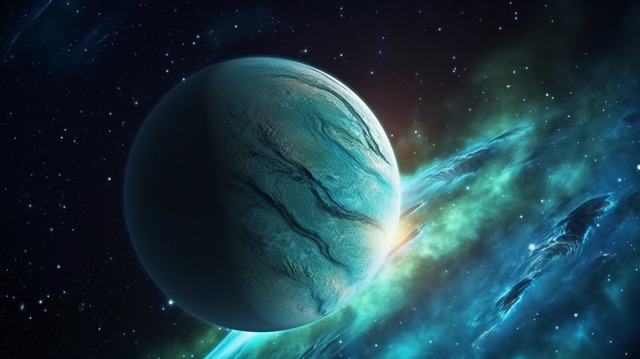

Neptunus adalah planet kedelapan dan terjauh dari Matahari dalam tata surya. Dengan diameter sekitar 49.244 kilometer, Neptunus adalah planet terbesar keempat berdasarkan diameter dan ketiga terbesar berdasarkan massa. Planet ini dikenal karena warna birunya yang menawan, disebabkan oleh metana di atmosfer yang menyerap cahaya merah dan memantulkan cahaya biru. Atmosfer Neptunus sebagian besar terdiri dari hidrogen, helium dan metana, serta angin tercepat di tata surya, yang dapat mencapai kecepatan hingga 2.100 kilometer per jam. Suhu rata-rata di Neptunus sangat dingin, mencapai -214°C, meskipun panas internalnya cukup tinggi untuk memancarkan lebih banyak energi daripada yang diterimanya dari Matahari.
Fakta menarik tentang Neptunus adalah bahwa planet ini memiliki 14 satelit alami, dengan Triton sebagai yang terbesar. Triton memiliki orbit retrograde, yang berarti ia mengorbit Neptunus berlawanan arah dengan rotasi planetnya. Hal ini menunjukkan bahwa Triton mungkin adalah objek yang ditangkap oleh gravitasi Neptunus di masa lalu. Neptunus juga memiliki sistem cincin yang tipis dan gelap, yang terdiri dari partikel-partikel kecil yang sulit diamati. Misi Voyager 2 pada tahun 1989 adalah satu-satunya misi yang pernah mengunjungi Neptunus, memberikan data berharga tentang planet ini, termasuk keberadaan Bintik Gelap Besar, badai besar yang mirip dengan Bintik Merah Besar di Jupiter.